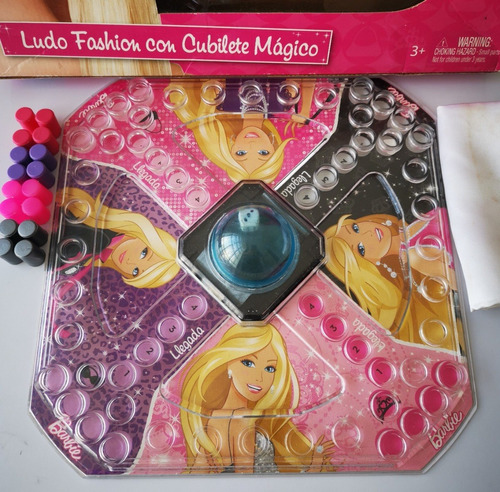

Ludo Barbie
Furor entre los ludocas mas veteranos

Ludo Fashion
GameToys ha lanzado una versión con temática de Barbie del juego Ludo. Las compañías de juguetes a menudo colaboran para crear ediciones especiales y temáticas de juegos populares para capitalizar el atractivo de personajes y marcas conocidas. Si estás interesado en encontrar una versión temática de Barbie del juego Ludo, te sugiero buscar en tiendas de juguetes, sitios web de juguetes o plataformas en línea especializadas en juegos de mesa. Allí podrás encontrar información actualizada sobre posibles ediciones especiales o variaciones de Ludo que presenten temática de Barbie.